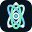

Option A · Helix Selected

Header 62px
Mobile 42px
Icon 64 / 32 / 16

Helix
The existing nucleus, redrawn without the block letter behind it. Three light orbits, a bright core, and electrons set in a triangle. The name stays solid white so it holds on the navy grid, and Computing sits in tracked cyan.